План и задачи
Опишите идею. Pilot разложит её на шаги и запишет, по каким признакам принимать каждый результат.
Context Pilot передаёт следующему ИИ-агенту задачу, файлы и решения, чтобы вы могли продолжить с места остановки.
В записи первый агент меняет два файла, а после остановки второй агент получает его правки и продолжает работу. Независимая проверка находит ошибку. После исправления тест проходит.
В Git остались изменения в work-time.js и work-time.test.js.
После повтора этапа он получил эти два файла и задачу — добавить флаг --total-only.
Тест вернул 96 минут вместо 95. После исправления npm test прошёл, Pilot принял 9 из 9 критериев.
Работает с вашими инструментами
Опишите идею. Pilot разложит её на шаги и запишет, по каким признакам принимать каждый результат.
Следующий агент получает задание, решения и изменения в файлах. Вам не придётся пересказывать предыдущий чат.
Отдельный агент запускает обязательные команды. Если тест упал, задача возвращается на исправление.
Опишите, что хотите сделать. Следите за задачей, передачей контекста и результатом в одном окне.
Посмотреть запуск--total-only. За выбранный период он должен печатать только итог в минутах.work-time.jsM
work-time.test.jsM
work-time.jsM
work-time.test.jsM
npm test
Первая сессия успела изменить реализацию и тест. Её прервали специально, чтобы проверить восстановление.
После нажатия «Повторить этап с ошибкой» следующая сессия получила оба файла и последние действия предыдущей.
Контрольный сбой дал 96 минут вместо 95. Pilot зафиксировал упавший тест и вернул работу на исправление.
После исправления отдельный агент снова запустил тест. За выбранные два дня CLI вернул 95 минут, за пустой период — 0.
Решения, задачи и критерии живут в вашем Git-проекте. Новый агент забирает только то, что нужно для его этапа.
Смотреть исходникиЧто нужно учитывать агенту при работе над задачей
Вывести суммарное время за период
Задачи и решения можно читать прямо в редакторе.
Правки в памяти проекта проходят через обычный diff.
События и результаты попыток хранятся на вашем компьютере.
Для ручной передачи достаточно файла и той же версии кода.
Пакет следующей сессии можно прочитать заранее. Вот задание, которое помогло продолжить реальную работу над CLI.
Скачать пример передачиПакет для продолжения работы
Напечатать только общее число минут за период и сохранить прежние форматы отчёта.
ИЗМЕНЕНИЯ ПЕРВОГО АГЕНТАwork-time.jsM
work-time.test.jsM
$ npm testОбязательная команда
Перед остановкой изменены два файла: work-time.js и work-time.test.js.
Обе правки в рабочей копии. Осталось проверить флаг --total-only для пустого периода.
Тест ожидал 95 минут и получил 96. После исправления итог — 95, код выхода — 0.
Откройте снимок остановки: какие файлы успел изменить агент и с чего продолжать.
В отчёте проверяющего остались критерии, команда и её фактический вывод.
Скачайте задание в Markdown. Напарник сможет открыть его в новом чате с той же версией кода.
Откройте дашборд в своём Git-проекте. Для установки понадобится Node.js 22.18 или новее с npm.
npm install -g https://github.com/yevgenevic/context-pilot/releases/download/v0.1.3/context-pilot-0.1.3.tgz# В папке своего проекта
$ pilot init
$ pilot dashboard
Для автоматического запуска нужен Codex CLI с выполненным входом. Для Claude Code скачайте файл передачи. pilot doctor покажет, что доступно.
